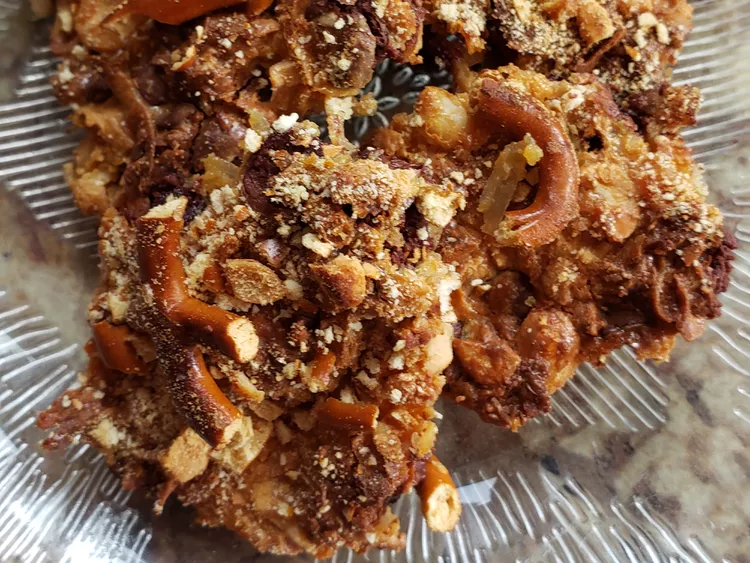

These 5-ingredient chocolate pretzel bits are for when you are craving something sweet, but also a bit savory. And with only 5 ingredients, they are so easy—most of the ingredients are already in your pantry.

Ingredients
1 cup sweetened coconut flakes
1/4 cup crushed pretzels
1/4 cup chopped roasted peanuts
1/2 cup semi-sweet chocolate chips
1/2 cup sweetened condensed milk
Directions
Preheat the oven to 325 degrees F (165 degrees C). Line an 8x8-inch pan with parchment paper. Lightly spray parchment with cooking spray.
Combine coconut, pretzels, peanuts, chocolate chips, and condensed milk in a large bowl and stir until fully combined. Transfer mixture to baking pan and spread out evenly.
Bake in the preheated oven until golden brown, about 30 minutes. Remove from the oven and let cool completely before cutting into bars.